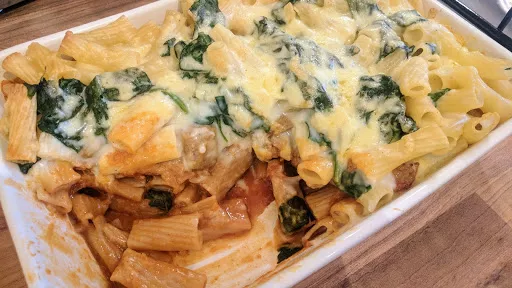

Rigatoni sausage bake

You can prepare this dish several hours ahead, so it's ideal for when you're having friends around for supper.
Servings: 6
Total: 1 hr 15 mins
Ingredients
- 1 tbsp olive oil
- 1 onion, chopped
- 400 g good quality pork sausages, skins discarded and meat chopped
- 1 large carrot, grated
- 150 ml red wine
- 300 ml vegetable stock
- 3 tbsp tomato puree
- 500 g rigatoni
- 200 g fresh spinach
- 140 g mature cheddar cheese, grated
- 50 g butter
- 50 g plain flour
- 600 ml milk
- good pinch nutmeg, freshly grated
Instructions
- Preheat the over to 170°C/Gas 5. Heat the
oil1 tbsp
in a large pan and fry the onion1
for 5 minutes until softened. Stir in the sausagemeat and fry until lightly coloured. Add the carrot1 large
, wine150 ml
, stock300 ml
, puree3 tbsp
and seasoning. Bring to the boil and simmer uncovered for 15 minutes.
- Put all the sauce ingredients in a pan with some seasoning and simmer, whisking all the time, until thick and smooth.
- Cook the
pasta500 g
according to the instructions on the packet, remove from the heat and stir in the spinach200 g
until just wilted, then drain. Spread half the pasta500 g
and spinach200 g
in a shallow 2.2-litre ovenproof dish. Cover with the sausage sauce, then the remaining pasta500 g
and the white sauce. Sprinkle with the cheese140 g
and bake for 25 minutes until golden brown.
-
kcal
749
-
fat
33 g
-
saturates
16 g
-
carbs
84 g
-
sugar
? g
-
fibre
5 g
-
protein
31 g
-
salt
2.32 g
BBC Good Food: Pasta & Noodle Dishes
Short Link
Long Link